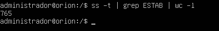

7.1 Detección y bloqueo de ataques DDoS con Mikrotik.
1. Introducción
Los ataques DoS, aunque no suponen una pérdida ni exposición de datos, pueden llegar a representar una gran pérdida económica tanto por la imposibilidad de prestar unos servicios como por la repercusión en la reputación de la empresa.
Es este capítulo se aborda cómo reforzar la seguridad perimetral para tratar demitigar los efectos de un ataque DoS o DDoS desde Internet a los servidores que se encuentran en la red DMZ.
En la última parte del capítulo, para comprobar el correcto funcionamiento de las medidas de seguridad que se van a aplicar, será necesario realizar una serie de ataques DoS dirigidos a los servidores.
2. Escenario de trabajo
En la siguiente figura, se tiene el escenario que se utilizará y que es el que se trabajó en el capítulo 6.1. Como se puede observar el esquema se ha simplificado con los equipos necesarios para simular el ataque DoS.
Figura 1. Escenario de trabajo.
Por otra parte, hay que utilizarla máquina real (PC Teletrabajo) para comprobar si se ha perdido o no el acceso al servicio y, además, preparar otra máquina virtual como máquina atacante con las siguientes características:
- Kali Linux (o cualquier otra distribución GNU/Linux con escritorio gráfico).
- Adaptador puente configurado por DHCP.
3. Ataque DoS
Para realizar el ataque DoS, hay que seguir los siguientes pasos estando en un equipo Kali Linux:
1. Instalar el paquete slowhttptest sino está disponible.
2. En el siguiente artículoSlowHTTPTest Package Descriptionse describe el funcionamiento de SlowHTTPTest.
3. Tomando como guía el comando del ejemplo del artículo, hay que lanzar un ataque DoS al servidor HTTP, pero incrementando el número de conexiones a 2000.
(rootkali)-[/home/kali]
# slowhttptest -c 1000 -H -g -o slowhttp -i 10 -r 2000 -t GET -u http://192.168.0.100/index.html -x 24 -p 3
4. Una vez se ha lanzado el ataque, mientras dura la ejecución del programaslowhttptest (unos minutos), se pierde el acceso HTTP al servidor.
Figura 2.Servicio HTTP no disponible.
Ver conexiones
Para ver las conexiones entre el atacante (192.168.0.19) y la víctima a través de MikroTik, hay que acceder a: IP --> Firewall --> Connections.
Figura 3.Visualización de las conexiones en el router.
Otra forma de realizarlo es desde la consola del servidor mediante el comandosiguiente:
root@orion:/#ss -t
Figura 4.Visualización de las conexiones en el servidor web.
Para contar el número de conexiones el comando sería el siguiente:
root@orion:/#ss -t | grep ESTAB | wc -l

Figura 5.Cuenta de las conexiones establecidas (las del ataque).
Una vez se acaba la ejecución de SlowHTTPTest, se crea un archivo html con un informe del ataque. El archivo slowhttp.htmlmuestra información gráfica y textual del test.Una vez el ataque ha finalizado, se puede observar en la gráfica que el servicio web se ha restablecido (figura 7).
| Figura 6.Se informa que se han generado 2 ficheros (csv/html) | Figura 7.Fichero slowhttp.html |
4. Configuración de MikroTik
Una vez se ha comprobado la vulnerabilidad del sistema frente ataques DoS, el siguiente paso es fortificar el router para evitar la denegación del servicio web o cualquier otro equipo accesible desde el exterior.
MikroTik describe en su wiki el funcionamiento de latabla RAWcomo la que permite omitir oeliminar paquetes de forma selectiva antes de que se produzca el seguimiento de la conexión(connection tracking), de manera que reduce la carga de la CPU significativamente. Es por esto que es una herramienta muy útil para mitigar los ataques de denegación de servicio y es la que se utilizará en este punto.
En el siguiente artículo SYN/DoS/DDoS Protection, hay unas indicaciones con el funcionamiento, este es elresumen:
- Cada vez que se detecte una conexión nueva que quiera atravesar el router, se enviará para que sea examinada por una cadena no estándar y, así, determinar si se trata de una ataque DoS o DDoS.
- Cuando se determine que una nueva conexión es un ataque, las direcciones IP origen y destino se añadirán a las listas de atacantes y objetivos respectivamente.
- El filtrado de las conexiones entre atacantes y objetivos se hace a través de la tabla raw, que actúa antes del resto de tablas. De esta manera, al no pasar por otras tablas se reducen los recursos utilizados para impedir los ataques.
Del artículo citado anteriormente, se va a implementar únicamentela configuración recogida enel apartado Configuration explainedcon algunas modificaciones ya que existen errores yteniendo en cuenta lo siguiente:
- Aunque las instrucciones estén para el CLI se puede configurar MikroTik desde Webfig o Winbox. En las reglas que añaden las direcciones a las listas de atacantes y objetivos se establece el temporizador a 10 minutos, por lo que pasado este tiempo las direcciones IP agregadas se eliminarán de las listas. Webfig/Winbox no permite este tipo de valores, solo se podrán usar los valores:
- none dynamic: las direcciones IP de las listas se eliminarán tras un reinicio.
- none static: las direcciones IP no se eliminan tras un reinicio, incluso se incluirán en una copia de la configuración del router.
- Si se realiza el proceso desde la consola, se recomienda la conexión al router vía SSH para poder copiar y pegar las reglas.
En este caso se van a crear las reglas mediante la consola siguiendo el siguiente esquema. Como se puede observar, la 1ª regla lo que hace es que cada vez que se detecta una conexión nueva (connection.state=new) que quiera atravesar el router (forward), se enviará para que sea examinada por una cadena no estándar (chain block-ddos) para determinar si se trata de una ataque DoS o DDoS.
Figura 8.Esquema conceptual de las reglas.
[admin@RouterOS] > /ip firewall filter
[admin@RouterOS] /ip firewall filter> add action=jump chain=forward comment="Protección DDoS" connection-state=new jump-target=detect-ddos place=1
[admin@RouterOS] /ip firewall filter> add action=return chain=detect-ddos dst-limit=32,32,src-and-dst-addresses/10s
[admin@RouterOS] /ip firewall filter> /ip firewall raw
[admin@RouterOS] /ip firewall raw> add chain=prerouting action=drop dst-address-list=ddos-attackers
[admin@RouterOS] /ip firewall raw> /ip firewall filter
[admin@RouterOS] /ip firewall filter> add action=add-dst-to-address-list address-list=ddos-target address-list-timeout=10m chain=detect-ddos
[admin@RouterOS] /ip firewall filter> add action=add-src-to-address-list address-list=ddos-attackers address-list-timeout=10m chain=detect-ddos
Figura 9.Comandos para la configuración de la detección DoS en Mikrotik.
| Figura 10.WebFig FilterRules. | Figura 11.WebFig Raw. | Figura 12.WebFig Address List. |
{kind=link}
{kind=link}
{kind=link}
5. Comprobación
Una vez se ha configurado el router, se vuelve a lanzar elataque DoScon SlowHTTPTest siguiendo estos pasos:
1. Se lanza el ataque contra el servidor web.En este caso, la denegación de servicio dura menos, incluso es posible conectarse al servidor web antes de que haya acabado la ejecución de SlowHTTPTest.
2.Si se accede a la sección IP --> Firewall --> Address Listse puede observar que las direcciones IP de Kali Linux (atacante - 192.168.0.19) y Ubuntu Server - Servidor Web (192.168.1.254) se han añadido a ambas listas.
Figura 13. Lista de direcciones.
4. Si se ejecuta de nuevo el ataque, se puede comprobar que esta vez el ataque no tiene efecto sobre el servidor ya que desde un equipo de la red se accede al mismo (imagen inferior derecha). Por otro parte, en la imagen inferior izquierda se puede observar que desde el equipo atacante No se puede acceder al servidor (está bloqueado este equipo durante 10 minutos) y las conexiones establecidas son las propias de los accesos de los equipos de la red.
| Figura 14. Ataque DoS y comprobación de acceso al Servidor Web. | Figura 15.Acceso al Servidor Web por un equipo de la red. |
Si se accede al servidor web y se ejecuta el comando para contar las conexiones establecidas, se puede observar que son las que se indican en la figura superior izquierda y que no suben como antes de configurar las reglas de detección y bloqueo de DoS.
Figura 16. Cuenta de las conexiones establecidas en el Servidor Web.
Una vez se finaliza el ataque, si se accede al informe se puede ver que el servicio se ha tenido disponible en todo momentos con pocas conexiones (las producidas por los equipos de la red).
Figura 17. Informe del comando SlowHTTPTest.
6. Ataque SYN
Si se accede de nuevo al artículoSYN/DoS/DDoS Protection,se puede observar que también se puede configurar el router para evitar ataques SYN Flood y SYN-ACK Flood.
SYN Flood
Syn Flood es una forma de ataque de denegación de servicio en el que un atacante envía una sucesión de solicitudes al sistema del objetivo en un intento de consumir suficientes recursos del servidor para que el sistema no responda al tráfico legítimo.
[admin@RouterOS] > /ip settings set tcp-syncookies=yes
SYN-ACK Flood
[admin@RouterOS] > /ip firewall filter add action=return chain=detect-ddos dst-limit=32,32,src-and-dst-addresses/10s protocol=tcp tcp-flags=syn,ack
7. Referencias
Obra publicada con Licencia Creative Commons Reconocimiento No comercial Compartir igual 4.0